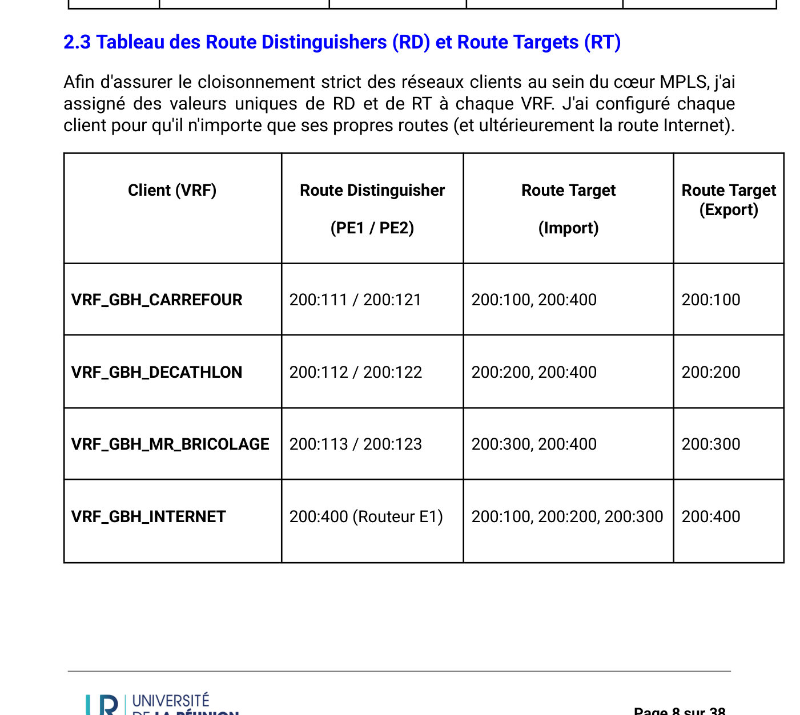
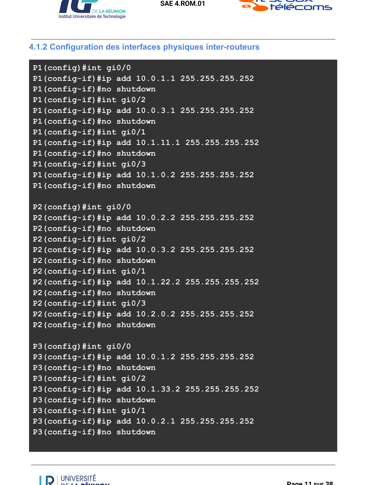
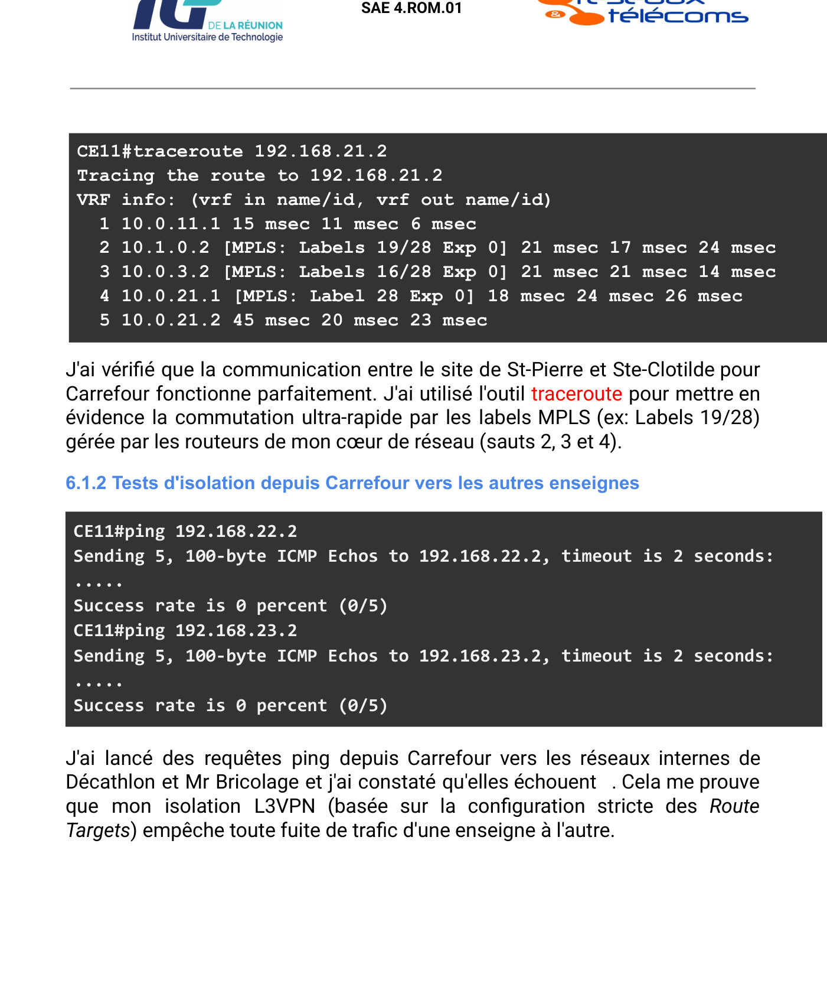
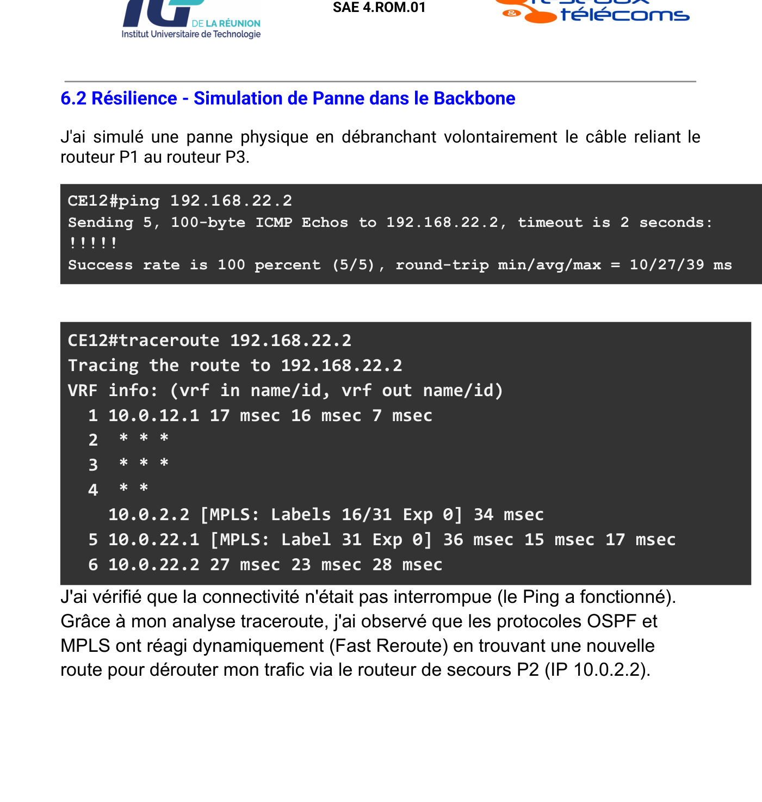
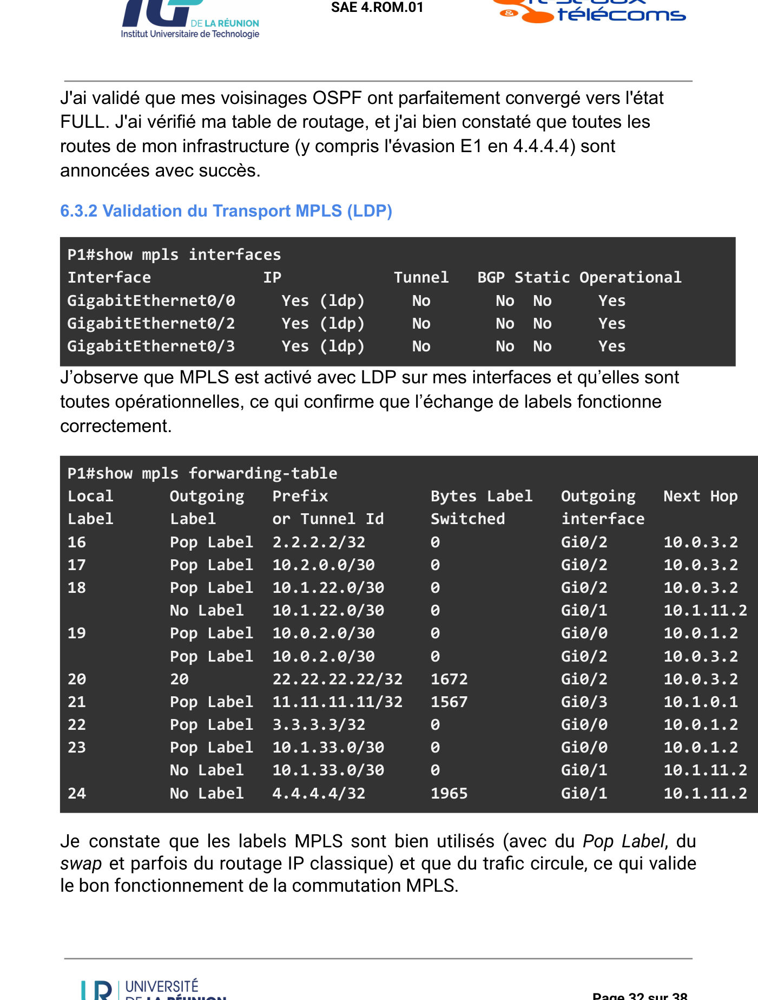

Déployer une infrastructure opérateur et ses services clients
Pour l'opérateur fictif A.I Telecom, raccorder trois nouveaux sites du groupe GBH à un cœur de réseau MPLS, avec une étanchéité totale entre enseignes.
Équipe : Projet individuel · Réalisé par Imane ABDOU

Contexte et objectif
Contexte
Le groupe GBH étend sa présence à La Réunion : trois nouveaux sites de la ZAC Canaby (Saint-Pierre) doivent rejoindre ses sites déjà raccordés en VPN MPLS. Carrefour, Décathlon et Mr Bricolage partagent la même infrastructure physique mais ne doivent jamais voir le trafic des autres.
Objectif
Configurer cœur de réseau et routeurs de bordure, isoler chaque enseigne, offrir un accès Internet centralisé, valider par des tests complets et éclairer le client sur une éventuelle migration SD-WAN.
Ma mission
Mon rôle
Projet réalisé seule, de la conception à la validation :
- Topologie, plan d'adressage et tableau des Route Distinguishers / Route Targets
- Configuration du backbone (OSPF aire 0, MPLS/LDP) et des VRF sur les PE
- Sessions MP-BGP VPNv4 et redistribution mutuelle avec OSPF, EIGRP et RIP côté clients
- Passerelle d'évasion Internet (VRF dédiée, NAT overload) et batterie de tests
- Étude comparative SD-WAN / MPLS pour le client
Travaux réalisés
Cœur de réseau
Loopbacks comme Router-ID stables, liens point-à-point en /30, OSPF aire 0 et activation de MPLS (LDP) sur les interfaces du backbone.
Isolation des clients
Une VRF par enseigne sur PE1 et PE2, avec RD uniques et Route Targets en import/export strict ; interfaces clients associées par ip vrf forwarding.
Diffusion des routes
Session MP-BGP (AS 2) entre loopbacks, address-family VPNv4 et communautés étendues ; redistribution OSPF / EIGRP / RIPv2 ↔ BGP.
Évasion Internet centralisée
Routeur E1 avec VRF_GBH_INTERNET (RT 200:400), interface DHCP en NAT outside, ACL et PAT overload, route par défaut propagée via default-information originate.
Validation
Ping et traceroute intra-enseigne, tests d'isolation, simulation de panne, vérification de l'underlay, du transport et de l'overlay.
Outils et technologies
Illustrations du projet
Images extraites du rapport. Cliquez pour agrandir.





Difficultés et solutions
no auto-summary pour le VLSM).Résultats obtenus
- Connectivité 100 % entre sites d'une même enseigne, avec commutation par labels MPLS visible au traceroute
- Isolation totale entre Carrefour, Décathlon et Mr Bricolage
- Résilience validée par simulation de panne
- Voisinages OSPF FULL, LDP opérationnel, sessions VPNv4 établies et route d'évasion présente dans chaque VRF
Compétences développées
Compétences
- Conception et configuration d'un réseau opérateur
- Routage avancé (MPLS, MP-BGP, redistribution)
- Isolation multi-clients (VRF)
- Méthodologie de validation et de dépannage
- Conseil technico-économique (MPLS vs SD-WAN)
Ce que ce projet m'a apporté
C'est le projet le plus complet de mon parcours : il m'a fait raisonner comme un opérateur, du cœur de réseau jusqu'au service rendu au client, en documentant chaque choix.
Envie d'aller plus loin ?
Le document complet détaille toutes les configurations, mesures et analyses.